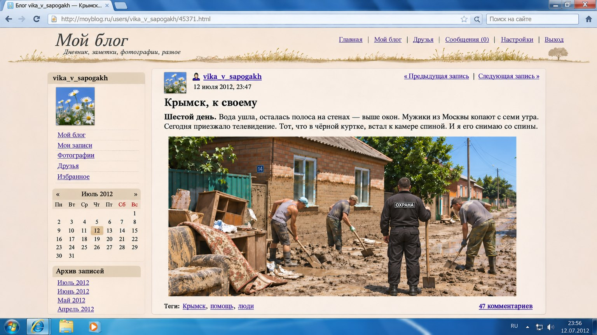

Ринат. Москва — Крымск, июль 2012

В субботу, седьмого, он стоял на складе в ночь, и Виталя в начале десятого переключал каналы на маленьком телевизоре над журналом, искал футбол и не нашёл, потому что футбола летом не было, а нашёл новости.
Показывали воду. Сначала Ринат не понял, где это, и подумал, что опять Китай или Индия, где вода каждое лето, а потом увидел вывеску на угловом доме, русскую, «Продукты», и под вывеской воду по самые окна, бурую, с пеной, и в воде плыл холодильник, белый, на боку, медленно, дверцей вверх. Потом показали улицу с частными домами, одноэтажными, с шиферными крышами, и на крышах сидели люди. На одной сидели трое и собака. Снимали, видно, с телефона, утром, против солнца, и картинка дрожала. Потом показали ту же улицу днём, когда вода ушла: заборы лежали, где их положило, плашмя, в одну сторону, и на стенах домов шла полоса, ровная, тёмная, выше окон, и над полосой стена была белая, а под ней коричневая. Диктор сказал, что это Крымск, Краснодарский край, что ночью, под утро, город накрыло волной, что погибших несколько десятков и что число уточняется.
— Это где? — спросил Виталя.
— Кубань, — сказал Ринат.
— Это ж море там.
— Под Новороссийском.
Виталя посмотрел на него. Он за два года привык, что Ринат знает, где что, и ни разу не спросил откуда, и сейчас не спросил. Ринат знал из гарнизонной карты на стене в штабе под Питером, где округа были закрашены разным цветом и Северо-Кавказский шёл вниз, к морю, жёлтый, и по нему кружками были посёлки, через которые шли эшелоны. Крымск на той карте был, маленький кружок у железной дороги перед Новороссийском. Эшелон, в котором он ехал зимой двухтысячного, проходил его ночью. Он тогда спал.
На экране показали женщину. Она стояла у своего забора, в халате, в резиновых сапогах, мокрая до пояса, и говорила в микрофон, что воды не было, а потом была сразу, что она проснулась, потому что собака лаяла, и опустила ноги с кровати, а там вода, и что мать у неё лежачая, и что они мать подняли на шкаф, вдвоём с сыном, и сидели на шкафу до утра. Женщина говорила ровно, без слёз, тем голосом, каким рассказывают дорогу, и Ринат слышал, что так говорят, пока ещё не поняли. Потом поймут.
— На шкафу, — сказал Виталя. — Прикинь.
Ринат не ответил. Он смотрел на крыши. Люди на крышах сидели правильно. Внутри было хуже. Внутри было то, чего не показывали.
В половине двенадцатого позвонил Ахмет.
— Ильдарыч. Видел?
— Видел.
— Гена там, — сказал Ахмет. Он помолчал, и Ринат слышал, как у него в машине работает радио и как он его выключает. — Гена Крымский. На фотке, третий справа, в тельнике. Он оттуда, из Крымска. Я ему с обеда звоню. Не берёт.
Ринат помнил фотографию. Он смотрел на неё на стене у Ахмета в комнате без окна два года подряд, на каждой планёрке, и знал её лучше, чем знал Ахмета: бронетранспортёр, горы, восемь человек в панамах и касках, Рустем худой, тёмный, с автоматом, Саня с краю, с проводом от наушника под бушлатом. Третий справа был светлый, широкий, в тельняшке под расстёгнутым бушлатом, и стоял, положив руку на броню, как кладут руку на свою машину. Имени Ринат не знал.
— Связи нет, наверное, — сказал он.
— Наверное, — сказал Ахмет. — Я завтра ещё позвоню.
Он не положил трубку. Ринат ждал.
— Я его с девяносто шестого не видел, — сказал Ахмет. — Он после госпиталя к себе уехал, и всё. На двадцать третье звонит. Каждый год. А я ему ни разу. — Он помолчал. — Ладно. Стой.
Ринат положил телефон на стол, рядом с журналом. В половине второго он пошёл на обход, вдоль забора, фонарём по колючке, и в журнале потом записал время точно, без округления, как записывал в Москве в дыму два года назад, когда больше было нечего делать точно.
⁂
Гена нашёлся в воскресенье, в восьмом часу вечера. Позвонила его жена, с чужого телефона, и Ахмет потом пересказывал это в своей комнате без окна, сидя под фотографией, и пересказывал дважды, сначала Ринату, потом Витале, который приехал позже, и во второй раз теми же словами, что в первый.
Дом у Гены стоял на улице у реки, в трёх кварталах от воды. Река называлась Адагум, и Ахмет, когда сказал это слово, посмотрел на Рината, как смотрят на того, кто должен знать, а Ринат не знал. Вода пришла под утро, в начале четвёртого, сразу, без дождя, хотя дождь шёл весь день перед этим, и Гена проснулся от того, что кровать под ним поплыла. Они с женой вылезли на чердак, через люк, а потом через слуховое окно на крышу, и сидели на крыше до девяти утра, вдвоём, на шифере, держась за трубу. Соседка, через забор, старуха, одна жила, не вылезла. Её нашли в обед, в доме, под потолком. Телефон Генин утонул вместе с домом, а дом стоял, только внутри было то, что было в телевизоре: по потолок, и потом ушло, и оставило.
— Сверху сидели, — сказал Ринат.
Ахмет посмотрел на него.
— Ну, — сказал он. — Где ещё.
Он сидел за столом, широкий, с короткой шеей, с пятном, уходившим под воротник, и Ринат видел, что Ахмет весь день думал об одном и теперь, когда Гена нашёлся, думает о другом, и что второе тяжелее первого.
Рустем позвонил в десятом часу, Ахмету, а потом, через минуту, Ринату.
— Ахмет едет, — сказал Рустем. — Во вторник, говорит, или раньше. Я ему сказал: бери машину, бери, что надо, клуб скинется. Пацаны уже скинулись. — Он помолчал. — Гена наш. Ты его не знаешь. Он меня в девяносто пятом из люка вытащил, под Шали, за шиворот. Я тебе не рассказывал.
— Не рассказывал.
— Ну вот, рассказал. — Рустем подождал. — Ты с ним?
Ринат посмотрел на календарь с машинами на стене вагончика. Июль на календаре был красный, «Мазда», и в июле у Гоши в листе стояли пятница, суббота и воскресенье, через неделю, Дни города в двух областных, и в среду студия.
— Поеду, — сказал Ринат.
Рустем помолчал. Ринат слышал, как он молчит, и не понимал, что в этом молчании, пока Рустем не сказал:
— Ты не сказал «посмотрю».
— Не сказал.
— Ну, — сказал Рустем, и голос у него стал другой, тише, и в нём не было ни радости, ни того, что он сейчас скажет «я же говорил». — Езжай. Ахмету скажи, клубные деньги у него. Матери я сам скажу.
⁂
В понедельник был траур.
Ринат узнал об этом утром, в автобусе, когда ехал со склада домой: на остановке у «Преображенской» флаг на здании управы висел приспущенный, и к древку была привязана чёрная лента, узкая, неподвижная, потому что ветра не было. В автобусе по радио у водителя вместо музыки шли новости, одни и те же, по кругу: сто пятьдесят, сто семьдесят, Крымск, Геленджик, Новороссийск, губернатор, тот, кого выбрали, прилетал в субботу ночью. Потом сказали, что развлекательные передачи сегодня по всем каналам отменены. Водитель, немолодой, усатый, сказал вслух, никому, что воду спустили с водохранилища, чтобы не прорвало, и не предупредили, потому что ночью, и все это знают. Женщина у передней двери сказала, что не спускали, что это дождь, по радио говорили. Водитель сказал «говорили». Больше никто ничего не сказал.
Гоше Ринат написал из автобуса. Он долго искал буквы.
«Меня неделю нет. Крымск. Р.»
Гоша ответил через минуту: «Эдику сказать?»
«Сам».
Эдик взял на третьем гудке.
— Ринат Ильдарович, — сказал он, и голос был тише, чем всегда, траурный, как у всех в понедельник. — Слушаю вас.
— Я на Кубань еду. Неделю. С ребятами. Помогать.
Эдик помолчал.
— Хорошее дело, — сказал он. — Правильное. — Ринат слышал, как он перекладывает телефон из руки в руку. — В пятницу у нас Тула, вы помните. Ну, ничего, Олег человека даст. — Он подумал. — Вы знаете что, Ринат Ильдарович. Если там будут камеры, а там будут, скажите, что от группы. Что «Переход» помогает. Это хорошо будет. Людям приятно.
— Я не от группы, — сказал Ринат.
— А от кого?
Ринат подумал.
— От брата.
Эдик засмеялся, коротко, без обиды, как смеются, когда человек сказал что-то наивное и милое.
— Ну, от брата так от брата, — сказал он. — Звоните, если что. Аккуратнее там, говорят, заразы много.
⁂
Ахмет дал «Газель». Не Гошину, а свою, складскую, белую, с синим тентом, на которой днём возили со склада плитку, и Виталя, получив ключи, обошёл её кругом, попинал колёса и сказал, что дойдёт, если не гнать. Права у Витали были с армии, у Рината с прошлого лета: Ахмет отправил его на курсы вождения после курсов охранников, сказал, что старшему без прав нельзя, и Ринат сдал с первого раза, как сдавал всё, что надо было сдать. Сам Ахмет ехал на своей машине, тёмной, высокой, японской, с двумя из своих, Серёгой и Кириллом, сменщиками со стоянки.
Покупали в понедельник днём, на строительном рынке у кольцевой, по списку, который Ахмет переписал от руки с телефона: на юге, сказали Генина жена и все, кто звонил оттуда, нужно было не то, что везли в первый день. Одежды навезли горы, говорил Ахмет, её уже девать некуда. Нужны лопаты, совковые, вёдра, перчатки, резиновые сапоги, побольше, разных размеров, хлорка, «Белизна», мешки для мусора, большие, чёрные, вода в пятилитровых бутылях, свечи, фонари, батарейки, мыло. Ринат ходил по рядам с тележкой, а Виталя за ним с другой, и продавцы, узнав, куда, отдавали дешевле, а один, у которого они взяли двадцать лопат, отдал двадцать первую даром и сказал: «На Кубань? Это вам. За моего. У меня там брат в Абинске, его не задело».
Вечером, в восьмом часу, когда они грузили «Газель» во дворе в Свиблове, у подъезда, потому что Ахмет велел ставить машину на ночь там, где живёт водитель, вышел Максим.
Он шёл из магазина, с пакетом, в шортах и в майке, и было ещё за двадцать пять, и асфальт во дворе отдавал жар, как отдаёт кирпич в бане. Он остановился у «Газели» и посмотрел, что в ней: лопаты, связанные по пять, сапоги в коробках, бутыли с водой в два ряда до потолка тента.
— Туда? — спросил Максим.
— Туда.
Максим постоял. Он поставил пакет на асфальт, полез в карман шортов, достал бумажник, вынул из него деньги, не считая, Ринат видел, сколько, пять тысяч одной бумажкой, рыжей, и протянул Витале, а не Ринату. Виталя взял и посмотрел на Рината.
— На солярку, — сказал Максим. — Туда тысяча четыреста, обратно столько же. «Газель» берёт литров тринадцать на сотню, если гружёная, если не гнать. Это… — Он посчитал, Ринат видел, как он считает, глядя на тент. — Это вам на полдороги хватит. Остальное сами.
— Спасибо, — сказал Виталя.
Максим кивнул и взял пакет. Он не уходил. Он смотрел на Рината, долго, дольше, чем нужно, чтобы сказать «ну, давай», и Ринат ждал, что он скажет ещё что-нибудь, и Максим ничего не сказал. В лице у него было то, чего Ринат не мог прочитать, как не мог прочитать Денисово лицо на Фонтанке в первую среду. Не жалость и не удивление. Что-то, что Максим знал, а Ринат нет.
— Отец спрашивал, — сказал Максим. — По телевизору показывали, люди сами едут. Сказал, сам бы поехал. Спина. — Он помолчал. — Я ему скажу, что ты.
— Скажи.
Максим пошёл к своему подъезду. У двери он обернулся и сказал:
— Ринат. Ты там аккуратнее.
Ринат кивнул, и Максим вошёл.
⁂
На Воробьёвы горы они заехали в десятом часу, уже в темноте. Ахмету кто-то из клубных сказал, что на смотровой площадке у университета собирают, что там фуры и машины, и что людей с машинами не хватает, и что можно взять сверх своего, если есть место. Место было: под самым тентом оставалось на полметра.
Ринат здесь не был никогда. Он видел смотровую площадку по телевизору, когда показывали свадьбы и байкеров, и не думал, что она такая большая и что над ней такое небо, тёмное, огромное, а внизу, за парапетом, лежит вся Москва, в огнях, до самого края, и над огнями, далеко, светятся башни в Сити, те самые, что стояли у Олега в окне. Площадка была полна. Стояли фуры, три, с открытыми задними дверями, и вдоль них, цепью, стояли люди и передавали коробки, из рук в руки, от машин, которые подъезжали и отъезжали, к фурам. Коробки были подписаны маркером: «детское питание», «лекарства», «гигиена», «одежда жен.». Под фонарём сидела на складном стуле девушка с ноутбуком на коленях и с телефоном у уха, и к ней подходили, и она говорила, куда ставить.
Белое Ринат увидел сразу. Ленточки на рюкзаках, на сумках, на рукавах, у одного парня белая лента была повязана на голову, как повязывают от пота. Такие же он видел зимой по телевизору, на Болотной, на проспекте, и в мае, у кинотеатра на мосту, под дубинками. А с другого края площадки, ближе к университету, стояли другие, тоже с машинами и с коробками, и у них были флаги, свои, с названием движения, и футболки одного цвета, с буквами, и они тоже передавали коробки цепью, в свои фуры, и две цепи стояли на одной площадке, шагах в пятидесяти одна от другой, и между ними ходили люди, которые не принадлежали ни к одной, и носили туда и туда.
А в первой цепи, у фуры, среди белых ленточек, стояли трое в форме. Ринат узнал форму раньше, чем лица: камуфляж, высокие ботинки, на рукаве нашивка, которую он видел зимой и весной в каждом выпуске новостей. ОМОН. Шлемов на них не было, и бронежилетов, и дубинок, они были в одних кителях, с засученными рукавами, и один, самый здоровый, стоял внутри фуры, на краю, и принимал коробки снизу и ставил вглубь, ровно, одну на другую, как кирпич в кладке. Парень с белой лентой на голове подавал ему снизу. Омоновец брал, ставил, поворачивался за следующей. Они ничего друг другу не говорили. Ринат стоял у «Газели» и смотрел на них, на омоновца в фуре и на парня с лентой внизу, и вспоминал белые шлемы на экране у Витали в мае, поднятые дубинки, парня, которого несли вчетвером лицом вниз. Этот омоновец мог там быть. Этот парень тоже. Сейчас один подавал, другой ставил.
— Ильдарыч, — сказал Виталя рядом. — Это ж менты.
— Вижу.
— Грузят.
— Вижу, — сказал Ринат.
Они взяли сверх своего восемь коробок: детское питание, памперсы, две с лекарствами, подписанные «от температуры» и «желудок». Девушка с ноутбуком записала их номер и спросила, куда едут. Ахмет сказал: «К своему». Девушка подняла голову, посмотрела на Ахмета, на его шею, на пятно, и записала: «Крымск, к своему». Ринат видел через её плечо, как она это записала, в таблицу, в клетку, под другими строчками, и как под этим, ниже, написала номер «Газели».
⁂
Выехали в одиннадцатом часу. Ахмет впереди, «Газель» за ним, и Виталя за рулём, потому что ночью, сказал он, он не спит, если за рулём, а если не за рулём, спит сразу. Ринат сидел рядом, на пассажирском, и смотрел на дорогу.
Москва выпускала долго. Варшавка, потом кольцевая, потом Каширка, потом пошла трасса, ровная, в четыре ряда, с отбойником посередине, и по обе стороны темнота, и в темноте иногда огни, деревня, заправка, пост. Фуры шли в правом ряду, сплошь, одна за другой, и Виталя обгонял их по левому, ровно, не дёргаясь, на ста, и Ринат думал, что Виталя водит лучше, чем бреется. На заправке под Каширой стояли ещё две «Газели», тоже гружёные, и на лобовом стекле у одной был прилеплен скотчем лист, белый, и на нём фломастером было написано одно слово: «Крымск». У второй ничего не было написано, но водитель, куривший у колонки, посмотрел на их тент, на бутыли под тентом, и кивнул, как кивают своим, и Виталя кивнул ему.
После Тулы Ринат сел за руль. Было начало третьего. Виталя уснул сразу, как и говорил, привалившись головой к стеклу, и у него в кармане, в джинсах, коротко зажужжал телефон, раз, эсэмэской, и Ринат ждал, что сейчас пойдёт праздничная, круг, три слова, аккорд, но это было не звонок, и праздничная не пошла.
Он вёл и думал про эшелон. Зимой двухтысячного они ехали этой же дорогой, только по железной, в теплушках, и ехали четверо суток, и на каждой станции их загоняли обратно в вагоны, чтобы не разбежались, и они смотрели в щели, и в щелях была эта же земля, только белая. Потом были горы, и Гудермес, и броня, на которой сидели сверху. Он подумал, что за двенадцать лет впервые едет туда же, на юг, не в эшелоне, и что едет сам, и что его не загоняют. Это было странно, и он не знал, хорошо ли.
Под Воронежем начало светать. Небо слева посветлело, а потом стало красным, низко, над полями, и поля пошли такие, каких Ринат не видел никогда: ровные, до горизонта, без единого дерева, жёлтые от чего-то, что росло на них, и только когда солнце поднялось, он увидел, что это подсолнухи, и что все они, все до одного, на всём поле, повёрнуты головами в одну сторону, к солнцу, ещё низкому, и стоят, как стоят на плацу, когда скомандовали «равняйсь». Он вёл и смотрел на них. Виталя проснулся у моста через Дон, посмотрел в окно и сказал «ни фига себе» и опять уснул.
Днём была жара. За Ростовом за тридцать, и в кабине, хотя окна были открыты, стоял горячий воздух, и пахло бензином, разогретым дерматином и пылью, а когда проезжали поля, ещё и сеном, сухим, сладким. Ахмет впереди останавливался каждые три часа, на заправках, и они выходили, и стояли в тени под навесом, и пили воду из своих же бутылей, тёплую, и Ахмет каждый раз звонил Гене, на чужой телефон, и каждый раз говорил: «Едем. Едем, Гена. К вечеру». Серёга и Кирилл, Ахметовы, курили у колонки, и Кирилл, младший, лет двадцати пяти, с наколкой на пальцах, спросил у Рината, правда ли, что он барабанщик с той самой, и Ринат сказал «правда», и Кирилл сказал, что у него на телефоне она тоже, в машине, и что под неё хорошо ехать, когда устал. Ринат не спросил, которая.
После Краснодара слева, на юге, поднялись горы, невысокие, лесистые, синие в жаре, и над ними небо было светлее, чем над полями, как бывает над морем, хотя моря отсюда не было видно. Указатели стали другие: Абинск, Крымск, Новороссийск. Машин в сторону Крымска стало больше, и среди легковых пошли грузовики МЧС, оранжевые, с синими полосами, и военные, крытые, зелёные, и автобусы, и на одном автобусе за стеклом стояла картонка «Волонтёры. Самара».
Запах пришёл раньше города.
Ринат почувствовал его за несколько километров, когда въезжали в низину, и Виталя тоже почувствовал и закрыл окно, а потом опять открыл, потому что в закрытой кабине было нечем дышать. Это был запах реки, когда в ней что-то долго лежало: тина, ил, мокрое дерево, и под этим, глубже, сладкое, тяжёлое, то, что Ринат знал и узнал сразу, и не стал называть даже про себя.
⁂
Город начинался не с домов, а с того, что вынесли из домов.
Вдоль улицы, по обе стороны, на обочинах, у заборов, стояли кучи. Диваны, раскисшие, в буром иле, с вывороченными пружинами. Шкафы, разбухшие, с дверцами, которые не закрывались. Ковры, свёрнутые и не свёрнутые. Холодильники. Матрасы. Телевизоры, старые, с выпуклыми экранами, и плоские, новые, и на одном плоском, стоявшем у забора экраном к дороге, засох ил, ровно, как засыхает краска. Детская коляска. Кресло. Книги, пачками, слипшиеся в кирпичи. Кучи стояли у каждого двора, одна к одной, и за кучами стояли дома, и на каждом доме шла та полоса, из телевизора, ровная, коричневая, у кого выше окон, у кого под самую крышу. Ринат смотрел на полосу и видел, что она идёт по всей улице на одной высоте, от дома к дому, через заборы, через деревья, по стволам, как по линейке, и что на этой высоте вчера, позавчера, в субботу под утро, стояла вода.
На улицах работали. Ринат видел людей во дворах, с лопатами, с вёдрами, по колено в грязи, и видел, что одни из них местные, а другие нет, и отличал их сразу, как отличают в казарме молодых от дедов: местные работали медленно, молча, и лица у них были серые, а приезжие быстро, и разговаривали, и у многих были перчатки одного цвета, синие, новые. Солдаты в зелёном, без ремней, в тельниках, грузили на грузовик то, что лежало у забора, молча, вдвоём, и один был совсем мальчик, с ушами, и Ринат посмотрел на его уши дольше, чем надо было.
Лагерь стоял на краю города, у объездной дороги, и за дорогой начиналось поле, и на поле стояли подсолнухи, такие же, как под Воронежем, все головами на восток, спиной к вечернему солнцу. С одной стороны от лагеря стояли палатки МЧС, большие, брезентовые, синие, с надписями, с другой, дальше, лагерь внутренних войск, с часовым у въезда и с полевой кухней, от которой шёл дым. А посередине, на вытоптанной траве, был свой: палатки, разные, туристические, синие, зелёные, оранжевые, сколько привезли, кто какую, и между ними натянутые тенты, и под тентами столы, и коробки, горами, до самого тента, и люди. Много. Молодых больше, но и немолодых тоже, и все были грязные по колено, и все ходили быстро, и никто ни на кого не кричал.
На въезде за столом под тентом сидела девочка лет шестнадцати, в бейсболке, с тетрадкой, и спросила, сколько их, откуда и на сколько.
— Шестеро, — сказал Ахмет. — Москва. На неделю. Мы к своему, у реки. Но и вам, если надо.
— Надо, — сказала девочка и записала. — Вода, сапоги?
— Полная машина.
Девочка подняла голову.
— Тогда к складу, — сказала она. — Вон туда, где МЧС. Разгрузитесь, они примут. Себе оставьте, сколько надо. — Она посмотрела на Ахмета, на Рината, на Виталю, на Серёгу с Кириллом, на чёрную футболку у Кирилла с черепом и на наколку на его пальцах, и сказала тем же голосом, каким говорила «вода, сапоги»: — У нас правила. Алкоголь нельзя совсем. И про политику не разговаривать. Вообще. Ни с кем.
— Не будем, — сказал Ахмет.
— И первый день старым не советуйте, — сказала девочка. — Как надо. Они уже знают.
Ахмет кивнул. Ринат видел, что ему смешно и что он не засмеётся, потому что девочка говорила всерьёз, и что ей шестнадцать, и что она сидит здесь за столом с тетрадкой, а не дома.
⁂
Генин дом они нашли в девятом часу, в сумерках.
Улица шла от реки вверх, полого, и чем ближе к реке, тем выше была полоса на стенах. У Гены она была под самым карнизом. Забор лежал во дворе, плашмя, весь, одним куском, вместе со столбами, и на заборе лежала яблоня, вырванная с корнем, и корни торчали вверх, в ил. Дом стоял. Одноэтажный, кирпичный, с шиферной крышей, и в крыше, у трубы, было слуховое окно, маленькое, квадратное, без рамы. Ринат посмотрел на окно и на трубу рядом и понял, где они сидели.
Гена сидел на лавке у крыльца. Лавку, видно, отмыли первой, потому что больше во дворе ничего отмыто не было. Он был в майке, в шортах, в резиновых сапогах на босу ногу, и был совсем не похож на того, на фотографии: не светлый, а седой, и не широкий, а грузный, с животом, и с красными руками, и с лицом, которое за три дня перестало что-либо выражать. Рядом с ним сидела жена, маленькая, в платке, и держала на коленях кошку, рыжую, мокрую ещё по брюху, грязную, и кошка не вырывалась.
Ахмет вышел из машины и пошёл к нему через двор, по илу, не глядя под ноги, и ил чавкал у него под кроссовками. Гена встал. Они постояли друг против друга, два немолодых мужчины, грузный и широкий, и Ринат, стоявший у «Газели», не слышал, что они сказали друг другу, и не хотел слышать. Потом Ахмет обнял его. Обнял и стоял, не хлопая по спине, как хлопали Рустем и Фара, а просто держал, и Гена держал его, и жена на лавке смотрела в сторону, на соседский забор, и гладила кошку.
Соседский забор стоял. За ним был дом, такой же, кирпичный, и дверь в нём была открыта настежь, и в двери никого не было, и окна были без стёкол, и на подоконнике снаружи стоял цветок в горшке, герань, засохшая, в иле по самые листья.
— Зоя Михайловна, — сказала Генина жена, увидев, куда смотрит Ринат. — Восемьдесят два. Одна. Сын в Краснодаре. Приезжал вчера. — Она помолчала. — Я ей кричала. Через забор. Она не слышала. Она в последние годы не слышала совсем.
Ринат кивнул. Он не знал, что сказать, и ничего не сказал. Генина жена, кажется, и не ждала. Она посмотрела на кошку у себя на коленях.
— Эту на дереве нашли, — сказала она. — На яблоне. Которая теперь там лежит. Сама залезла. А Шарик, собака, не знаю. Цепь оборвал, это я видела. Куда уплыл, не знаю.
⁂
Работали с семи утра, пока не жарко, и до одиннадцати, потом пережидали, в тени, и с четырёх опять, до темноты.
Утром, в среду, у штабной палатки, где на столе лежала карта города, разрисованная фломастером на квадраты, им дали ещё троих. Квадрат был тот же, Генин, улица у реки и две поперечные, и там, сказал координатор, худой, загорелый, с облезлым носом, парень лет тридцати, никто ещё не работал, кроме солдат, а солдаты только вывозят. Трое были москвичи. Женщина лет сорока пяти, полная, в соломенной шляпе, бухгалтер, она так и представилась, «Наталья, бухгалтер», и сразу спросила, где тут можно помыть руки, и засмеялась сама, потому что помыть руки было негде. Парень с бородой, рыжей, в очках, в футболке с какой-то надписью по-английски, Тимур, программист. И девушка. Высокая, выше Витали, худая, в очках, с волосами, собранными в хвост, в шортах, в резиновых сапогах до колен, и на рюкзаке у неё, на лямке, была повязана белая ленточка, узкая, атласная, бантиком, выгоревшая уже до серого.
Ахмет посмотрел на ленточку. Ринат видел, как он посмотрел. Серёга с Кириллом тоже. Кирилл открыл рот, и Ахмет, не поворачиваясь, сказал: «Правила», и Кирилл закрыл рот.
Девушку звали Вика. Она сказала это, протянув руку сначала Ахмету, потом Ринату, потом всем, и рука у неё была в перчатке, синей, рабочей, и пожатие было крепкое, мужское. Ринат пожал и отпустил, и она посмотрела на него, на лицо, коротко, и отвернулась к Гене, который вышел на крыльцо.
Начали с Зои Михайловны. Гена сказал, что сначала её, потому что сын просил, а сын в пятницу опять приедет, хоронить, и хочет, чтобы в доме хоть пол было видно. В Генином доме сказал потом, успеется.
Внутри было то, что Ринат ждал, и хуже. Ил стоял по колено, по всему дому, ровно, как стоит снег в поле, и под илом было всё: мебель, посуда, одежда, половики, и всё это надо было выкопать, вынести, а ил выгрести лопатами в вёдра, а вёдра на улицу, в кучу. Стены были мокрые и холодные, хотя снаружи уже было за двадцать пять, и от стен пахло. Обои висели языками. На потолке, в одной комнате, где стояла кровать, железная, с шарами на спинках, был след, тёмный, неровный, и Ринат посмотрел на него и не стал смотреть второй раз.
Выстроились цепью, сами, никто не командовал. Тимур и Серёга внутри, с лопатами, грузили ил в вёдра. Ринат у двери, принимал полные и подавал на крыльцо. На крыльце Вика. Дальше, на дорожке, Виталя, потом Наталья, потом Кирилл, у кучи на улице, который опрокидывал вёдра и бегом относил пустые обратно, по цепи вдоль забора. Ахмет и Гена в это время выносили из второй комнаты шкаф. Ведро было тяжёлое. Ил был не грязь, а тесто, плотный, вязкий, и в ведре он лежал горбом, и пах, и Ринат брал ведро у Тимура, поворачивался и отдавал Вике, и она брала, поворачивалась и отдавала Витале, и через час у всех был один ритм. Ринат слышал его. Он не мог его не слышать: взял, поворот, отдал, взял, поворот, отдал. На четыре. Тимур внутри задавал его лопатой, скрёб по полу, по доскам, которые были где-то под илом, раз, два, и бросал в ведро, три, четыре, и цепь шла под лопату, как идёт под бочку зал.
Шкаф застрял в двери. Ахмет и Гена тащили его из комнаты, разбухший, огромный, бабкин, с зеркалом на дверце, и в дверном проёме он встал, перекосившись, и ни туда ни сюда. Ахмет тянул снаружи. Гена толкал изнутри, из комнаты, где было темно, и тесно, и ил по колено, и Ринат видел, что Гена задыхается.
— Давай я, — сказал Ринат.
Он отдал ведро Вике, пролез мимо шкафа в комнату, сбоку, по стене, и встал на Генино место, внутри, в темноте, и Гену выпустил наружу, к Ахмету. Внутри было тяжелее: шкаф надо было не тянуть, а поднимать, на плечо, и проводить через проём, а снаружи только принимать. Он поднял. Шкаф пошёл. Зеркало на дверце прошло мимо его лица, близко, и в зеркале, мутном, в иле, мелькнуло его лицо, и комната за ним, и кровать с шарами, и он отвернулся. Шкаф вышел. Снаружи его приняли.
— Ты чего туда полез, — сказал Ахмет, когда Ринат вылез.
— Внутри хуже, — сказал Ринат. — Там тот должен, кто моложе.
Ахмет посмотрел на него и ничего не сказал.
⁂
В одиннадцатом часу стало нечем дышать, и они ушли со двора в тень, под Генин навес, где Генина жена поставила на ящик ведро с водой, чистой, из их же бутылей, и кружку, одну на всех, железную, эмалированную.
Ринат сел на ящик, спиной к стене. Вика пила из кружки, долго, а потом сняла очки и стала протирать их краем майки, и без очков лицо у неё было другое, моложе, и глаза щурились. Она надела очки, посмотрела на Рината и не отвела глаз.
— Извините, — сказала она. — Вы же «Переход»? Барабанщик?
Ринат кивнул. Виталя, сидевший рядом на корточках, поднял голову.
— Я ещё вчера подумала, на складе, — сказала Вика. — А потом думаю, нет, не может быть. Чего барабанщику тут делать. — Она засмеялась, коротко, и сразу перестала, оглянувшись на дом Зои Михайловны. — Я вас на фотографии видела. В журнале, давно. Там вы сбоку, на табуретке.
— Это давно, — сказал Ринат.
— Давно, — согласилась Вика. Она поставила кружку на ящик. — У меня ваша песня любимая. Та. Про наших. Я её с девятого класса слушаю. — Она подумала. — Только я праздничную выключаю. Где обрезано. Её же везде крутят, по телевизору, на Девятое мая, в маршрутке, у нас в универе в столовой на кассе. Я как слышу, что сейчас кончится, и там нет, выключаю. Мне в ней конец нужен. «Никогда больше». — Она сказала эти два слова не так, как поют, а так, как говорят, просто, и Ринат вдруг услышал их не голосом Дениса, а её голосом, высоким, усталым, на жаре, под навесом. — Это же самое главное там. Без этого она про другое.
Ринат молчал. Он сидел на ящике и смотрел на свои руки на коленях. Руки были в иле до локтей, и ил подсыхал и стягивал кожу. Он подумал про спортзал под Москвой два года назад, про мальчика с ушами на скамейке, про пятый удар, который он дал, и про то, как его потом стёрли, так ровно, что на месте ничего не осталось, ни дырки, ни шва. Вика говорила про место, которое любила, и не знала, что его вынимали дважды: Олег из записи, а потом Андрей из его живого удара, для телевизора. И не знала, что там, где пишут, Ринат теперь сам оставляет его пустым.
— Мы его пели, — сказала Вика. — Зимой, на Сахарова. Конец. Человек тридцать подпевали. — Она улыбнулась, не ему, а тому, что вспомнила. — Я его так громко никогда не пела.
— А удар? — спросил Ринат.
— Какой удар?
Он не ответил. Он сам не знал, зачем спросил. Вика смотрела на него, ждала, и он увидел, что она не поняла, и что ей не надо понимать, и что там, на Сахарова, где он не был, тридцать человек пели вторую половину строчки без барабана, и места перед ней не было, потому что барабанщика не было.
— А я ту не слушаю, — сказал Виталя.
Вика повернулась к нему.
— Какую?
— Длинную. Полную. — Виталя сидел на корточках, и подбирал с земли камешки, и бросал их в лужу у навеса, по одному. — Где в конце ещё. Мне праздничная. — Он подумал. — В полной там непонятно, чего хотят. Сперва «наших не бросают», правильно. А потом «никогда больше». Это чего, не бросают, но больше никогда? Это как? — Он бросил камешек. — А в праздничной понятно. У меня на звонке.
— У вас на звонке? — Вика засмеялась, и в этот раз не оглянулась на дом. — Серьёзно?
— Серьёзно, — сказал Виталя, достал из кармана телефон и показал ей, хотя показывать было нечего, экран был тёмный.
Вика посмотрела на Рината. Ринат увидел, что сейчас она спросит его, и что спросит она то, что надо было спросить, и что она уже открыла рот.
— А вы сами…
— Пошли, — сказал Ахмет от крыльца. — Четыре почти. Тень ушла.
Тени не ушло. Было без двадцати четыре, и навес ещё держал тень на полдвора, и Ахмет знал это не хуже Рината. Вика закрыла рот. Она посмотрела на Ахмета, потом на Рината, и, кажется, поняла, что Ахмет сделал, и не обиделась, а встала, надела перчатки и пошла к дому. Виталя пошёл за ней.
Ринат встал последним. Он стоял под навесом и смотрел, как они встают в цепь: Вика на крыльце, Виталя за ней, на дорожке, и как Тимур изнутри подаёт ей первое ведро, и она поворачивается и отдаёт Витале, и Виталя отдаёт Наталье. Ведро прошло от белой ленточки к телефону с праздничной на звонке, из рук в руки, и ни одна рука не остановилась, и ни один не подумал, кому он отдаёт.
Ему не надо было выбирать. Пока они оба таскали, ему не надо было. Он пошёл к двери и встал на своё место, между Тимуром и Викой, и взял у Тимура ведро.
⁂
К вечеру пол у Зои Михайловны было видно.
Доски, крашеные, рыжие, разбухшие, лежали в двух комнатах из трёх, и на них ещё стоял слой ила в палец, но его уже можно было смыть водой из шланга, если бы была вода в шланге. Воды не было. Её давали по часам, на соседней улице, из колонки, и Кирилл ходил туда с двумя вёдрами и приносил, и они мыли, тряпками, руками, и Наталья мыла и плакала, без звука, и мыла дальше, и никто ей ничего не говорил.
В восьмом часу Ахмет сказал, что хватит. Москвичи пошли в лагерь, пешком, через город, потому что в машину все не помещались, и Вика, уходя, помахала рукой, не Ринату, а всем, и белая ленточка на лямке у неё качнулась и легла. Ахмет посмотрел им вслед, потом на Гену.
— Стакан есть? — спросил он.
Гена подумал.
— Есть. Один. Из всех, что были, один.
Он ушёл в дом, в свой, где они ещё не работали, и вернулся со стаканом, гранёным, мутным, отмытым, но не до конца, и с бутылкой, которую Ахмет достал из машины, из-под сиденья, где она лежала с Москвы. Лагерь был в другой части города, и правила лагеря были там.
Стол Гена вынес из сарая, где он стоял выше полосы, на козлах. Поставили во дворе, на илу, и стол кособочился, и Виталя подложил под ножку обломок кирпича. Хлеба не было. Генина жена принесла буханку, белую, из гуманитарного пакета, в целлофане, и отрезала от неё кусок, и Ринат смотрел, как она режет, тонко и ровно, ножом к себе. Налили. Себе в крышки от бутылей, в пластмассовые стаканчики, Гене в кружку. Стакан налили полный и накрыли хлебом.
Гена стоял над ним. Он долго стоял, и все стояли, и Ринат видел, что Гена не знает, что сказать, и что говорить ему не надо.
— За Зою Михайловну, — сказал Ахмет. — И за всех тут.
Выпили не чокаясь. Ринат выпил свою крышку, водка была тёплая и пахла бензином от машины. Потом он сунул руку в карман штанов, рабочих, Ахметовых, с накладными карманами на бёдрах, куда утром переложил из сумки всё, что носил с собой всегда: Рустемовы палочки и пачку. Пачка была мятая, надорванная сверху, и в ней было девятнадцать, и табак в них высох так, что, когда он вынимал одну, из соседних посыпалось. Он положил её на стол, рядом со стаканом, поперёк.
Гена посмотрел на сигарету. Потом на Рината.
— «Прима», — сказал Гена.
Он больше ничего не сказал. Он взял сигарету со стола, двумя пальцами, осторожно, повертел и положил обратно, ровно на то место, где она лежала, поперёк, и Ринат видел, что руки у Гены дрожат и что он положил её точно.
Потом Гена сел на лавку и закурил свою, другую, из пачки, которую ему отдал Серёга, и сказал, глядя на соседский дом с открытой дверью:
— Я ей в субботу вечером хлеб относил. Она просила. Батон. Я отнёс. Она говорит: Гена, ты чего, дождь же. Я говорю: ну дождь. — Он затянулся. — Она глухая была, а дождь слышала. По крыше.
Сидели долго. Стемнело, и света на улице не было, ни в одном доме, только у Ахмета в машине горел плафон, и вдалеке, у реки, ходили фонари, и были слышны голоса и машины. Ахмет рассказывал Гене про Москву, про склад и стоянку, про Рустема, про клуб на Уралмаше, про фотографию, которая висит у него на кнопках. Гена слушал и кивал. Про Поклонную Ахмет сказал, что в феврале его ребята стояли там охраной, с ночи, на морозе, двадцать два, до трёх, и что Ильдарыч там играл.
— А я на Сахарова был, — сказал Гена.
Все посмотрели на него. Ахмет поднял брови.
— По телевизору, — сказал Гена и засмеялся, первый раз за вечер, коротко, хрипло. — Смотрел. На диване. А потом на Поклонную, тоже. По телевизору. — Он перестал смеяться. — Диван теперь вон.
Он показал подбородком на кучу у лежачего забора, где в темноте белело что-то большое, раскисшее, с пружинами.
Стакан простоял до ночи. Ринат ушёл последним, когда Ахмет уже спал в машине, откинув сиденье, а Виталя в «Газели», в кузове, на коробках, а Гена с женой у соседей через два дома, где был второй этаж. Перед тем как лечь в кабине, Ринат подошёл к столу. Стакан стоял, хлеб на нём подсох, а сигарета лежала поперёк, как положили. Он не стал её убирать в пачку. В пачке осталось восемнадцать. Эту он оставил Гене.
⁂
В четверг на улицу приехало телевидение.
Ринат увидел их в начале одиннадцатого, когда они с Тимуром выносили из Генина дома ковёр, свёрнутый, мокрый, тяжёлый, как бревно, и клали его на кучу. В конце улицы остановился микроавтобус, белый, с антенной на крыше и с надписью сбоку, областной, и из него вышли трое: девушка в светлом костюме, в туфлях, с микрофоном, парень с камерой на плече и ещё один, с треногой. Девушка посмотрела на ил под ногами, на свои туфли и осталась стоять у микроавтобуса. Парень с камерой пошёл по улице, снимая кучи, полосы на стенах, солдат с грузовиком.
Дальше по улице, через четыре двора, у дома, где никто не работал с понедельника, стояли ребята в одинаковых футболках, человек десять, с флагом своего движения на древке, и ждали, Ринат видел, ждали камеру, потому что, когда камера дошла до них, они разом взялись за лопаты и стали выносить из ворот то, что лежало у ворот, а флаг воткнули в кучу. Камера постояла на них минуту. Потом пошла дальше, к Гениному двору.
Ахмет стоял у ворот, без лопаты, вытирал руки о штаны. Девушка с микрофоном догнала камеру, всё-таки, в туфлях, по илу, на цыпочках, и подошла к Ахмету.
— Вы волонтёр? Откуда вы?
— Из Москвы, — сказал Ахмет.
— От какой организации?
Ахмет подумал. Ринат стоял у кучи с Тимуром, и видел, как Ахмет думает, и знал, что Ахмет сейчас скажет, и Ахмет сказал:
— К своему приехали. Служили вместе.
Девушка обрадовалась. Ринат видел, что она обрадовалась, и что «служили вместе» ей подошло лучше, чем любая организация, и она стала спрашивать, где служили и когда, и Ахмет сказал «на Кавказе» и «в девяносто пятом», и девушка сказала, что это очень трогательно, и попросила позвать того, к кому приехали. Гена вышел. Его поставили у стены, на фоне полосы, и он стоял, большой, седой, в майке, и не знал, куда деть руки, и сказал в микрофон, что спасибо ребятам, что приехали, что без них бы никак.
Камера пошла по двору. Ринат увидел её и повернулся спиной. Он не решал. Спина повернулась сама, как поворачивалась на сцене, когда кран над площадью шёл вдоль рядов, и он взялся за другой конец ковра, который они с Тимуром не дотащили, и потащил его к куче, спиной к камере, нагнувшись, и Тимур, взявшись за свой конец, посмотрел на него и тоже не поднял голову.
Вика в это время мыла на крыльце у Зои Михайловны ведро. Ринат видел краем глаза, как камера задержалась на ней, на её ленточке на рюкзаке, который висел на перилах, и как парень с камерой опустил её, посмотрел на ленточку уже без камеры и пошёл дальше, к солдатам.
— Это вас снимали? — спросила Вика потом, под навесом.
— Ахмета.
— А вас?
— Меня нет.
— А я видела, — сказала Вика. — Вы спиной стояли. — Она посмотрела на него внимательно, поверх очков, сдвинутых на нос, и Ринат подумал, что так смотрел Пермяк, поверх кружки, в ДК, когда сказал «это ты». — Вы всегда так?
Ринат не ответил. Вика подождала, а потом кивнула, будто ответ был, и стала пить воду.
⁂
Вика уезжала в пятницу утром. Её пять дней кончились, сказала она, им в лагере психологи говорят, что больше пяти нельзя, а она и так шестой, и автобус на Москву, волонтёрский, уходил от лагеря в девять. Она пришла на Генину улицу в семь, попрощаться, с рюкзаком, уже чистая, в чистой футболке, в кроссовках вместо сапог, и стояла у ворот и не входила во двор, потому что во дворе был ил.
Ринат вышел к ней.
— Ну, всё, — сказала Вика. — Тимур остаётся. Наталья тоже. А я всё. Мама звонит каждые два часа.
— Езжай.
Она постояла.
— Можно я вам скажу? — спросила она. — Я не про политику. Про песню.
Ринат кивнул.
— Я вчера, ночью, в палатке, её слушала. Полную. В наушниках. — Вика поправила лямку рюкзака, где ленточка. — И я там услышала, чего раньше не слышала. Там перед «никогда больше», в самом конце, барабан. Один. Лишний какой-то. Как будто… — Она искала слово. — Как будто кто-то споткнулся и не упал. Я это раньше не замечала. А вчера заметила. Это вы?
— Я, — сказал Ринат.
— А в праздничной его нет, — сказала Вика. — Я специально утром включила, у Витали попросила, он мне дал свой. Там его нет. Там сразу кончается. — Она посмотрела на него. — Вы вчера спросили, а удар? Я не поняла. Я теперь поняла.
Ринат ничего не сказал. Вика подождала, как ждала под навесом, и он видел, что она привыкла, за четыре дня, что он не отвечает, и что ей от этого не обидно.
— Ну, спасибо вам, — сказала она. — Барабанщик.
Она протянула руку, без перчатки, и Ринат пожал её, и рука у неё была тонкая и твёрдая, с мозолями от лопаты, свежими, на ладони, под пальцами. Потом она повернулась и пошла по улице вверх, к лагерю, мимо куч, мимо солдат, и рюкзак у неё за спиной качался, и на лямке качалась белая ленточка, выгоревшая до серого, и Ринат смотрел ей вслед, пока она не свернула за угол.
Виталя стоял у «Газели» и тоже смотрел.
— Нормальная, — сказал Виталя. — Хоть и эта. — Он показал на свою лямку, на плечо, где у Вики была ленточка. — Она мне вчера телефон вернула и говорит: ты, Виталь, послушай как-нибудь полную. Ну, я сказал, послушаю.
— Послушаешь?
Виталя подумал.
— Не знаю, — сказал он. — Может. Там длинно.
⁂
Уезжали в субботу, четырнадцатого, на рассвете. Гена остался, и жена его, и Серёга с Кириллом, которых Ахмет оставил на неделю, потому что в Генином доме ещё было полдома, а у соседей с другой стороны никого. Ахмет ехал в Москву: в понедельник у него была проверка на стоянке, и без него нельзя. «Газель» шла пустая, лёгкая, и в кузове, на полу, лежали только лопаты, их, московские, отмытые, двадцать одна, их Ахмет велел везти обратно, потому что Гене оставили столько, сколько было нужно, а остальное взял лагерь.
У Гены во дворе, на столе на козлах, стоял стакан. Пустой, вымытый, вверх дном. Сигареты рядом не было. Ринат посмотрел и не спросил.
Гена провожал их у ворот. Он обнял Ахмета, опять не хлопая, а потом Виталю, коротко, а потом Рината, и Ринат почувствовал, какой Гена тяжёлый и какой горячий, и что от него пахнет илом, потом и «Примой», той, сухой, восьмилетней, которая пахнет не так, как свежая, и понял, куда девалась сигарета.
— Рустему скажи, — сказал Гена. — Что я знаю. Что он пацанов прислал.
— Скажу.
— И сам приезжай. Потом. Когда отстроюсь. — Гена подумал. — На двадцать третье. Не на это. На то.
Ринат кивнул.
Обратно ехали весь день и половину ночи. Ахмет впереди, «Газель» за ним, и опять подсолнухи, все в одну сторону, и опять Дон, и опять Воронеж, и за Воронежем Ринат сел за руль. Виталя уснул сразу, привалившись к стеклу.
Телефон у Рината зажужжал в первом часу ночи, на пустой трассе, между фурами. Номер был незнакомый, длинный, уральский код. Ринат посмотрел на него, на трассу, на красные огни Ахметовой машины впереди и нажал.
— Барабанщик, — сказал голос в трубке.
Голос шёл издалека, с треском, как по межгороду, и Ринат узнал его по треску раньше, чем по голосу: так трещала трубка на свидании, через стекло, шесть лет назад, перед тем как щёлкнуть и замолчать.
— Здорово, — сказал Ринат.
— Здорово, здорово. — Фара засмеялся, и в трубке затрещало. — Ты не спрашивай, откуда звоню. С хорошего телефона. Тут у одного есть. — Он помолчал. — Мне пацаны в отряде сегодня показывают. По телеку, в новостях. Крымск. Ахмет стоит, Рустамов. Морда та же. Говорит, служили вместе. А за ним, во дворе, ковёр тащат. Двое. И один спиной. Я говорю: стой. Это ж барабанщик мой. А они мне: да ты чего, его ж не видно, спина одна. А я говорю: я его по спине знаю. Он с моего двора.
Ринат вёл. Фуры шли справа, сплошь, одна за другой, с огнями, и он держал «Газель» в своём ряду, ровно, не дёргаясь, и слушал треск.
— Узнал, значит, — сказал он.
— Узнал. — Фара помолчал опять. — В марте выхожу, барабанщик. Рустем знает. Встречать будешь?
Ринат смотрел на красные огни впереди, на Ахметову машину, которая шла ровно, на ста, и не обгоняла фуры, потому что Ахмет никогда не обгонял, если не надо было. Виталя спал рядом, и у него в кармане, в джинсах, молчал телефон, на котором стояла праздничная. В кузове, сзади, на каждой кочке брякали лопаты.
— Буду, — сказал Ринат.
— Ну, — сказал Фара. — Своих не бросаем.
И в трубке щёлкнуло, и стало тихо, без треска.
Ринат положил телефон на сиденье, между собой и Виталей. Он вёл и думал, что за неделю ни разу не сел за барабаны и что не хотел. Руки на руле лежали тихо. Потом правая, сама, не отпуская руля, стукнула большим пальцем по ободу, раз, два, три, четыре, и, пятый, туда, где спотыкаются, и он не стал её останавливать. Виталя не проснулся. Удара никто не слышал. Ничего не писали.
До Москвы оставалось километров пятьсот.